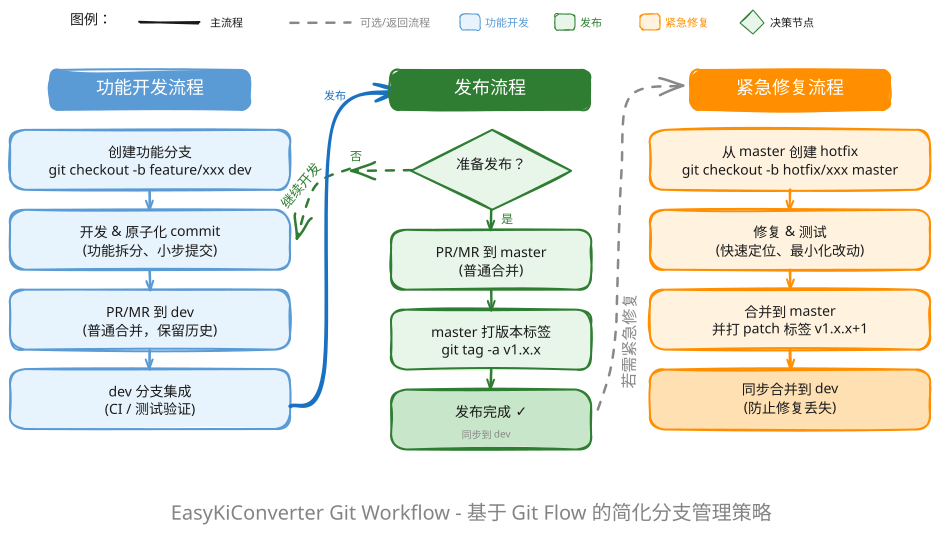

Contributing Guide¶
Thank you for your interest in contributing to EasyKiConverter! This document provides guidelines for contributing to the project.
Getting Started¶
Prerequisites¶
Before contributing, make sure you:
- Have read the project documentation:
- Project Architecture
- Build Guide
-
Have successfully built the project locally
-
Are familiar with:
- C++ programming language
- Qt framework (Qt Quick, Qt Network, etc.)
- CMake build system
- MVVM architecture pattern
- Git version control
Setting Up Development Environment¶
1. Fork the Repository¶
- Fork the repository on GitHub
- Clone your fork locally:
2. Configure Remotes¶
Add the upstream repository:
3. Create a Development Branch¶
Create a new branch for your feature or bug fix:
Code Standards¶
C++ Coding Standards¶
Follow Qt coding standards:
Naming Conventions¶
-
Class names: PascalCase
-
Function names: camelCase
-
Variable names: camelCase
-
Member variables: m_ prefix, camelCase
-
Constants: UPPER_SNAKE_CASE
File Organization¶
- Header files (.h) and implementation files (.cpp) should be separated
- Each class should have its own header and implementation file
- QML files should be organized by function module
- Resource files should be placed in the
resources/directory
Comments¶
-
Use Doxygen-style comments for classes and public methods
-
Add inline comments for complex logic
C++ Features¶
- Use C++17 features
- Use smart pointers (QSharedPointer, QScopedPointer) for resource management
- Use Qt's signal-slot mechanism for object communication
- Follow RAII principles
- File Encoding: All source files (
.cpp,.h,.qml,CMakeLists.txt, etc.) MUST use UTF-8 (without BOM) encoding. Encodings like UTF-8 with BOM or GBK are strictly prohibited. - Tool Validation: Before submitting code, contributors MUST use the provided encoding conversion tool.
- Path:
tools/python/convert_to_utf8.py - Usage:
python tools/python/convert_to_utf8.py - This tool ensures all files comply with the UTF-8 without BOM standard.
QML Coding Standards¶
-
Component names: PascalCase
-
Property names: camelCase
-
ID names: camelCase
-
Code formatting: 4-space indentation
- Comments: Use
//for single-line comments
Architecture Requirements¶
MVVM Architecture¶
Follow the MVVM architecture pattern:
- View Layer (QML): Responsible for UI display only
- ViewModel Layer: Manages UI state and business logic coordination
- Service Layer: Implements business logic
- Model Layer: Handles data storage
Export Service Architecture¶
Use the two-stage pipeline architecture (Fetch → Export):
- Fetch stage: concurrent network tasks controlled by the shared network layer (currently 10)
- Export stage: builds IR, converts formats, and writes files in parallel
- See: ADR-002: Pipeline Parallelism
Development Workflow Diagram¶
The following diagram illustrates the complete feature development, release, and hotfix workflow:

Workflow Summary:
| Process | Branch Strategy | Merge Method |
|---|---|---|
| Feature Development | feature/* → dev |
Merge commit, preserve history |
| Release | dev → master |
Merge commit, tag version |
| Hotfix | hotfix/* → master + dev |
Bidirectional merge, prevent fix loss |
Development Workflow¶
1. Make Changes¶
Make your changes following the code standards.
2. Test Your Changes¶
- Build the project successfully
- Run the application and test your changes
3. Commit Your Changes¶
Follow the commit message format:
Types:
- feat: New feature
- fix: Bug fix
- docs: Documentation changes
- style: Code style changes (formatting, etc.)
- refactor: Code refactoring
- test: Test additions or changes
- chore: Build process or auxiliary tool changes
Examples:
feat(component): add smart extraction feature
Add smart extraction feature to automatically extract component numbers
from clipboard text.
- Implement extractComponentIdFromText() method
- Add regex pattern matching for component IDs
- Update UI to support paste functionality
Closes #123
fix(export): resolve footprint parsing error
Fix footprint parsing error when processing components with
custom-shaped pads.
- Update Type judgment logic
- Add BBox complete parsing
- Fix UUID extraction issue
Fixes #456
4. Push to Your Fork¶
5. Create Pull Request¶
- Go to the original repository on GitHub
- Click "New Pull Request"
- Select your branch
- Fill in the PR template:
- Description of changes
- Related issues
- Screenshots (if applicable)
6. Review and Iterate¶
- Address review comments
- Make necessary changes
- Update your PR
Pull Request Guidelines¶
Before Submitting¶
- [ ] Code follows project coding standards
- [ ] Code compiles without warnings
- [ ] Documentation is updated
- [ ] Commit messages are clear and follow the format
PR Description Template¶
## Description
Brief description of the changes
## Type of Change
- [ ] Bug fix
- [ ] New feature
- [ ] Breaking change
- [ ] Documentation update
## Related Issues
Closes #123
## Testing
Describe how you tested the changes
## Checklist
- [ ] Code follows project standards
- [ ] Documentation updated
- [ ] No new warnings
Documentation¶
When to Update Documentation¶
Update documentation when: - Adding new features - Changing existing functionality - Modifying the API - Fixing bugs that affect user behavior
Documentation Standards¶
- Use clear, concise language
- Include code examples
- Add diagrams where helpful
- Keep documentation up to date
Issue Reporting¶
Before Reporting Issues¶
- Search existing issues
- Check if the issue is already fixed in the latest version
- Try to reproduce the issue
Issue Template¶
## Description
Clear description of the issue
## Steps to Reproduce
1. Step 1
2. Step 2
3. Step 3
## Expected Behavior
What you expected to happen
## Actual Behavior
What actually happened
## Environment
- OS: [e.g., Windows 10]
- Qt Version: [e.g., 6.10.1]
- Application Version: [e.g., 3.0.0]
## Screenshots
If applicable, add screenshots
## Additional Context
Any other relevant information
Code Review Process¶
Reviewer Guidelines¶
- Check code follows project standards
- Verify functionality is correct
- Ensure tests are adequate
- Check documentation is updated
Author Guidelines¶
- Respond to review comments promptly
- Make requested changes
- Explain your reasoning if you disagree
Release Process¶
Versioning¶
Follow semantic versioning: MAJOR.MINOR.PATCH
- MAJOR: Incompatible API changes
- MINOR: New functionality (backwards compatible)
- PATCH: Bug fixes (backwards compatible)
Release Checklist¶
- [ ] Documentation is complete
- [ ] CHANGELOG is updated
- [ ] Version number is updated
- [ ] Release notes are prepared
Community Guidelines¶
Code of Conduct¶
- Be respectful and inclusive
- Provide constructive feedback
- Help others learn
- Focus on what is best for the community
Communication¶
- Use GitHub Issues for bug reports and feature requests
- Use GitHub Discussions for questions and ideas
- Be patient with maintainers and other contributors
Recognition¶
Contributors will be acknowledged in: - Contributors list in README - Release notes - Project documentation
License¶
By contributing to EasyKiConverter, you agree that your contributions will be licensed under the GNU General Public License v3.0 (GPL-3.0).
Getting Help¶
If you need help: 1. Check existing documentation 2. Search GitHub Issues and Discussions 3. Create a new issue with your question
Thank You¶
Thank you for contributing to EasyKiConverter! Your contributions help make this project better for everyone.